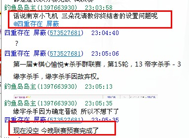
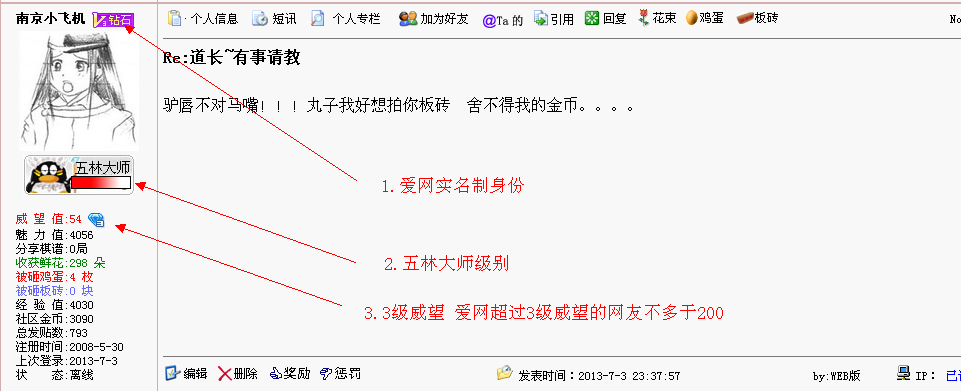
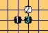
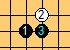
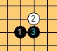
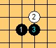
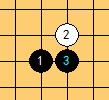
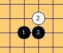
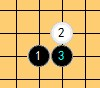

道长~有事请教
#1 道长~有事请教作者：南京小飞机 发表时间：2013-7-2 22:42:22
道长 这样的 以前看你发帖子 消除终结者棋子锯齿的，现在找不到了。。。。#2 Re:道长~有事请教作者：梧桐风 发表时间：2013-7-2 22:55:06
3朵你也好意思拿。。3000千不差不多#3 Re:道长~有事请教作者：南京小飞机 发表时间：2013-7-2 22:57:10
有其他人知道不……俺穷诶。。。。#4 Re:南京小飞机【==Re:道长~有事请教==】作者：釣鱼岛岛主 发表时间：2013-7-2 23:06:18
我不是挑事的人 楼主我不知道你什么脾气。
#5 Re:道长~有事请教作者：掌棋如烟 发表时间：2013-7-3 0:23:38
楼主你应该注册个妹子号来相求屏蔽欧巴，夸他浩然正气，说不定还能赚3朵花#6 Re:道长~有事请教作者：屏蔽 发表时间：2013-7-3 0:52:14
我回来了 关于LZ的问题 我记得很清楚 那不是我发的帖子……#7 Re:道长~有事请教作者：屏蔽 发表时间：2013-7-3 0:52:44
毕竟没有帮上LZ的忙 LZ你象征性地给一朵就行了。［ 南京小飞机同学于 2013-7-3 23:30:50 时花20金币送鲜花一朵］
#8 Re:道长~有事请教作者：虎哥 发表时间：2013-7-3 9:02:06
设置—盘面显示—其它—黑子消锯齿or白子消锯齿［ 南京小飞机同学于 2013-7-3 23:31:11 时花20金币送鲜花一朵］
［ 南京小飞机同学于 2013-7-3 23:31:11 时花20金币送鲜花一朵］
［ 南京小飞机同学于 2013-7-3 23:31:11 时花20金币送鲜花一朵］
#9 Re:道长~有事请教作者：草儿要出头 发表时间：2013-7-3 10:34:33
我的终结者咋不设置！
#10 Re:道长~有事请教作者：夏百萧 发表时间：2013-7-3 13:32:59
消除锯齿，里面有设置，很容易找到。这也要问……#11 Re:道长~有事请教作者：南京小飞机 发表时间：2013-7-3 23:29:45
不会上图 棋子四周 正方形的深黄色 丑死了。。。#12 re:道长~有事请教作者：小丸.net 发表时间：2013-7-3 23:33:40
调整棋盘大小，直到调到没有锯齿为止。。。。。这种小问题还要来问，有失你的身份啊。。。。#13 Re:道长~有事请教作者：南京小飞机 发表时间：2013-7-3 23:37:57
驴唇不对马嘴！！！丸子我好想拍你板砖 舍不得我的金币。。。。#14 Re:道长~有事请教作者：屏蔽 发表时间：2013-7-3 23:51:47
但我也觉得12楼说的比较在理。［ 小丸.net同学于 2013-7-4 0:15:06 时花20金币送鲜花一朵］
［ 小丸.net同学于 2013-7-4 0:15:06 时花20金币送鲜花一朵］
［ 小丸.net同学于 2013-7-4 0:15:06 时花20金币送鲜花一朵］
［ 小丸.net同学于 2013-7-4 0:15:06 时花20金币送鲜花一朵］
［ 小丸.net同学于 2013-7-4 0:15:06 时花20金币送鲜花一朵］
［ 小丸.net同学于 2013-7-4 0:15:06 时花20金币送鲜花一朵］
［ 小丸.net同学于 2013-7-4 0:15:06 时花20金币送鲜花一朵］
［ 小丸.net同学于 2013-7-4 0:15:06 时花20金币送鲜花一朵］
［ 小丸.net同学于 2013-7-4 0:15:06 时花20金币送鲜花一朵］
［ 小丸.net同学于 2013-7-4 0:15:06 时花20金币送鲜花一朵］
［ 小丸.net同学于 2013-7-4 0:15:06 时花20金币送鲜花一朵］
［ 小丸.net同学于 2013-7-4 0:15:06 时花20金币送鲜花一朵］
［ 小丸.net同学于 2013-7-4 0:15:06 时花20金币送鲜花一朵］
［ 小丸.net同学于 2013-7-4 0:15:06 时花20金币送鲜花一朵］
［ 小丸.net同学于 2013-7-4 0:15:06 时花20金币送鲜花一朵］
［ 小丸.net同学于 2013-7-4 0:15:06 时花20金币送鲜花一朵］
［ 小丸.net同学于 2013-7-4 0:15:06 时花20金币送鲜花一朵］
［ 小丸.net同学于 2013-7-4 0:15:06 时花20金币送鲜花一朵］
［ 小丸.net同学于 2013-7-4 0:15:06 时花20金币送鲜花一朵］
［ 小丸.net同学于 2013-7-4 0:15:06 时花20金币送鲜花一朵］
#15 Re:道长~有事请教作者：小丸.net 发表时间：2013-7-4 0:14:37

你觉得问这样的问题，不是有失你的身份。
另外，本人是终结者的用户，同时是五子妙手的作者，我所回答的问题，都是严谨的。。。。
感谢屏蔽挺我。。。呆会鲜花奉上。。。
#16 Re:道长~有事请教作者：虎哥 发表时间：2013-7-4 12:02:51
12楼说的可能正是针对楼主的情况。楼主可以试试直接全屏然后看效果。锯齿的大小不是渐变的，棋子的大小也不是渐变的，但是变化相对于锯齿的大小更快，调整棋盘大小能恰好调到锯齿相对于棋子来讲比较小。#17 Re:道长~有事请教作者：屏蔽 发表时间：2013-7-4 12:07:28
顺便建议撸主上图#18 Re:南京小飞机【==Re:道长~有事请教==】作者：虎哥 发表时间：2013-7-4 12:13:04

这是不同棋盘大小情况下棋子的效果，下图是按我说的设置方法消锯齿后的效果

看楼主的字体，应该是浏览器的问题所以才上不了图。
［此帖子已被 虎哥 在 2013-7-4 12:16:42 编辑过］